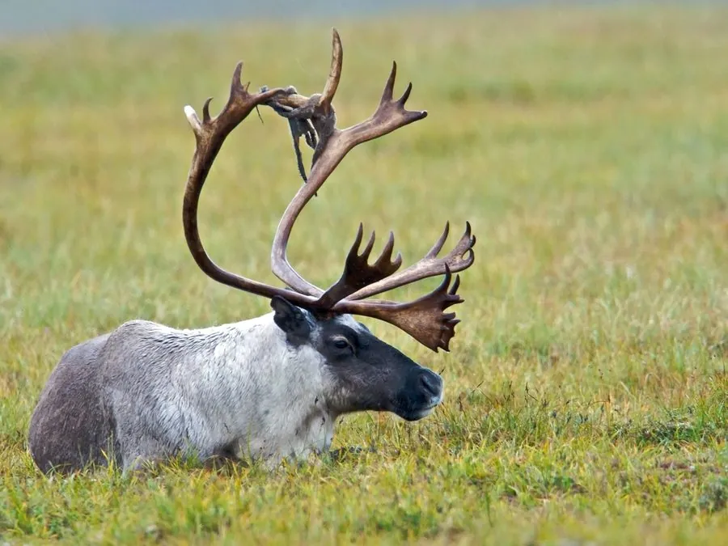

哺乳动物 · 动物界
驯鹿 Rangifer tarandus

北半球寒带的鹿类，雌雄都长角，蹄宽可刨雪取食，常进行大规模迁徙，也是圣诞传说中拉雪橇的主角。
- 分类
- 门脊索动物门纲哺乳纲目偶蹄目科鹿科属驯鹿属
- 栖息环境
- 北极苔原、泰加林与高山冻原，冬季依赖地被地衣
- 地理分布
- 环北极地区，从挪威、俄罗斯到加拿大、格陵兰和阿拉斯加
- 保护级别
- IUCN 易危（VU）
物种志
驯鹿体长 1.6–2.1 米，肩高 0.9–1.5 米，体重 60–300 kg，亚种差异大。它的被毛厚密，毛色从灰褐、棕褐到近白色不等，颈下有长毛；蹄宽大而圆，适合在雪地和沼泽行走；雌雄都长角，雄鹿角较大且分叉复杂，是鹿科中唯一雌雄都长角的物种。
驯鹿分布于北极苔原、泰加林和高山地区，从挪威、俄罗斯到加拿大、格陵兰和阿拉斯加，是北半球分布最靠北的有蹄类。它主食地衣、苔藓、灌木嫩枝和草类，冬季用宽大的蹄刨开积雪取食地衣。驯鹿常进行长距离迁徙，某些种群每年往返可达 5000 km，是陆生哺乳动物中最长的迁徙之一。雌兽妊娠期约 228 天，每胎 1 仔。家养驯鹿是北欧、俄罗斯和蒙古牧民的重要经济来源；野生种群因气候变暖、栖息地开发和过度捕猎，被列为易危。
形态与习性
- 食性地衣、苔藓、灌木嫩枝与草类，冬季刨雪取食地衣
- 体长1.6–2.1 m，肩高 0.9–1.5 m
- 体重60–300 kg，亚种差异大
- 寿命野外约 12–15 年
- 繁殖妊娠期约 228 天，每胎 1 仔
- 鹿角雌雄都长角，是鹿科中的特例
- 迁徙某些种群每年往返可达 5000 km
趣味知识
- 驯鹿是鹿科中唯一雌雄都长角的物种。
- 宽大的蹄像雪鞋，能刨开积雪寻找地衣。
- 部分驯鹿种群每年往返迁徙约 5000 km。
- 驯鹿眼睛的照膜会随季节在蓝绿色与金色之间变化。
生态关系
- 捕食 ← 狼 狼捕食驯鹿